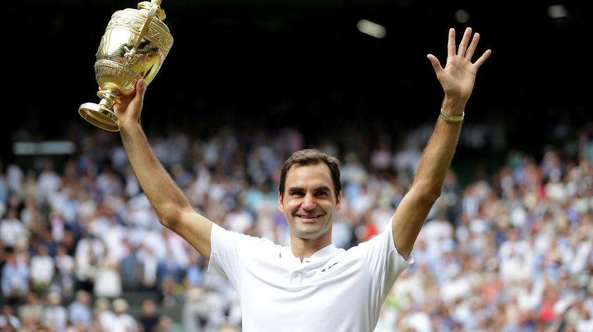
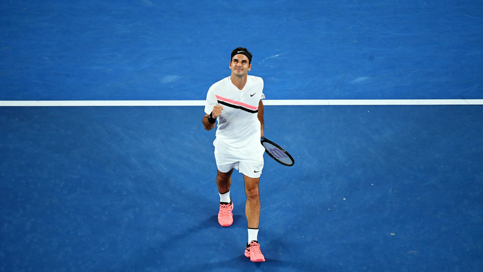

ROGER IN COLOURS
Here is Roger in three different tournaments.

Roger winning Wimbledon

Roger at Australian Open

Here we are at the webpage of Roger Federer.
Here are few facts about him
Roger is vegetarian
Roger speaks 6 languages
Roger can play piano
Here is Roger in three different tournaments.
Roger won 20 Grand Slam Tournaments in his career.
Federer has played in an era where he dominated men's tennis together with Rafael Nadal and Novak Djokovic, who have been collectively referred to as the Big Three and are widely considered three of the greatest male tennis players of all-time. A Wimbledon junior champion in 1998, Federer won his first Grand Slam singles title at Wimbledon in 2003 at age 21. In 2004, he won three out of the four major singles titles and the ATP Finals, a feat he repeated in 2006 and 2007. From 2005 to 2010, Federer made 18 out of 19 major singles finals.
Although Federer remained in the top 3 through most of the 2010s, the success of Djokovic and Nadal in particular ended his dominance over grass and hard courts. From mid-2010 through the end of 2016, he only won one major title. During this period, Federer and Stan Wawrinka led the Switzerland Davis Cup team to their first title in 2014, adding to the gold medal they won together in doubles at the 2008 Beijing Olympics. Federer also has a silver medal in singles from the 2012 London Olympics, where he finished runner-up to Andy Murray.

A versatile all-court player, Federer's perceived effortlessness has made him highly popular among tennis fans. Originally lacking self-control as a junior, Federer transformed his on-court demeanor to become well-liked for his general graciousness, winning the Stefan Edberg Sportsmanship Award 13 times. He has also won the Laureus World Sportsman of the Year award a record five times. Outside of competing, he played an instrumental role in the creation of the Laver Cup team competition. What an inspiring man!. Respect forever.
RF throughout his life achieved so much in tennis that very few players will ever be aple to top
his contribution to the sport.